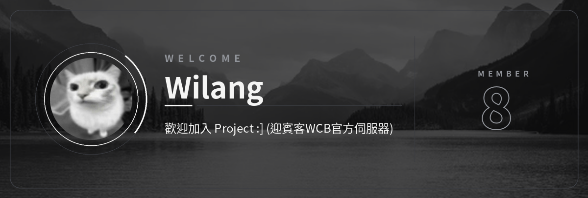

新成員一加入，就自動打招呼
迎賓客 WCB 會在成員加入或離開時發送訊息、附上歡迎圖片，並自動發放身分組。伺服器管理員用中文斜線指令就能設定，不用寫程式。

自訂圖片支援大小為 1200 × 406 px。
服務狀態
| 主機 | 狀態 |
|---|---|
| Render | 檢查中 |
| Wispbyte | 檢查中 |
狀態在你開啟頁面時即時檢查。兩台主機會輪流值班，一台使用中、另一台待命。Wispbyte 的狀態由 Render 回報，所以 Render 沒有回應時會顯示「無法確認」。
功能
- 歡迎訊息
- 成員加入時發到你指定的頻道。可選純文字或嵌入式訊息，內容可用 {user}、{server}、{member_count} 等變數。
- 歡迎圖片
- 自動畫出附有成員頭像、名稱與第幾位成員的圖片。花體字、符號、Emoji 的名稱也能正常顯示。
- 離開通知
- 成員離開時發訊息到指定頻道，內容自訂。
- 自動身分組
- 新成員加入時自動給指定身分組。權限不足時不會當機，而是在頻道提醒管理員。
- 管理名單
- 指定哪些成員或身分組可以使用設定指令，避免被其他人誤改。
指令
| 指令 | 用途 |
|---|---|
/設定 | 查看並修改所有設定 (嵌入式) |
/邀請 | 在指定頻道發送機器人邀請訊息 (嵌入式) |
邀請時需要的權限
- 檢視頻道、發送訊息
在你指定的頻道發送歡迎與離開訊息。 - 嵌入連結
發送嵌入式訊息。沒有這個權限時會改用純文字。 - 附加檔案
附上歡迎圖片。沒有這個權限時會略過圖片。 - 管理身分組
自動發放身分組。不使用這個功能可以不給。